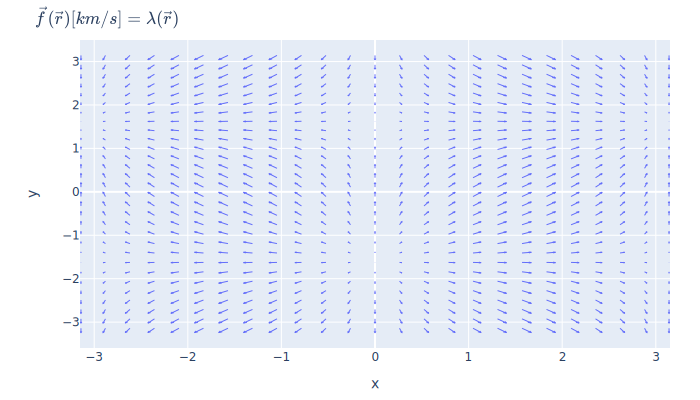

Kamodo Project Page¶
Kamodo is a new CCMC tool for access, interpolation, and visualization of space weather models and data in python. Kamodo allows model developers to represent simulation results as mathematical functions which may be manipulated directly by end users. Kamodo handles unit conversion transparently and supports interactive science discovery through jupyter notebooks with minimal coding and is accessible through python and fortran.
Usage¶
Suppose we have a vector field defined by a function of positions in the x-y plane:
from kamodo import kamodofy
import numpy as np
x = np.linspace(-np.pi, np.pi, 25)
y = np.linspace(-np.pi, np.pi, 30)
xx, yy = np.meshgrid(x,y)
points = np.array(list(zip(xx.ravel(), yy.ravel())))
@kamodofy(units = 'km/s')
def fvec(rvec = points):
ux = np.sin(rvec[:,0])
uy = np.cos(rvec[:,1])
return np.vstack((ux,uy)).T
The @kamodofy decorator lets us register this field with units to enable unit-conversion downstream:
from kamodo import Kamodo
kamodo = Kamodo(fvec = fvec)
kamodo
kamodo.to_latex()
We can now evaluate our function using dot notation:
kamodo.fvec(np.array([[-1,1]]))
We can perform unit conversion:
kamodo['gvec[m/s]'] = 'fvec'
kamodo
kamodo.gvec(np.array([[-1,1]]))
We can even generate plots.
import plotly.io as pio
fig = kamodo.plot('fvec')
pio.write_image(fig, 'images/fig2d-usage.svg')

Getting started¶
Where to download¶
If you have a nasa.developer.gov account, you may access the kamodo repository with git:
git pull https://developer.nasa.gov/CCMC/Kameleon2.0
Note
Kamodo is currently only available to users with NASA credentials. We are in the process of making Kamodo open to the public as an open-source project.
Download (mini)conda¶
We strongly recommend using the conda environment system to avoid library conflicts with your host machine's python.
Download and install miniconda from here.
Create Kamodo environment¶
Create a new environment for kamodo
conda create -n kamodo python=2.7 jupyter pandas numpy
Activate new environment¶
From a bash shell:
source activate kamodo
Requirements
- numpy
- scipy
- sympy
- pandas
- plotly==3.3
- pytest
- psutil
Loading a notebook¶
Start the notebook server in the Prototypes subdirectory
jupyter notebook Prototypes